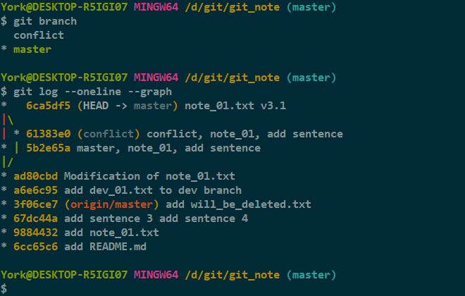
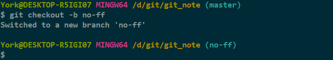
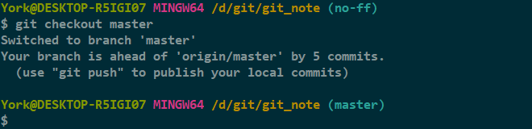
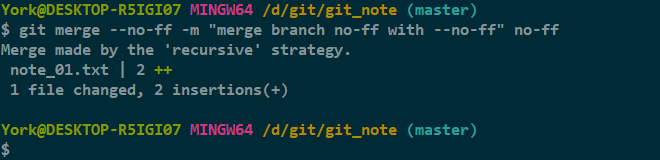
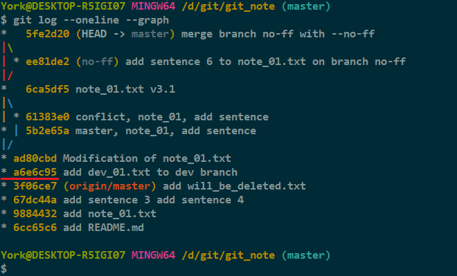
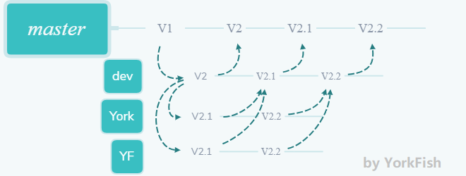

merge
1. Fast-forward
1.1 特性回顾
- Git 在合并分支时会尽可能地使用 Fast-forward
- 例子见 19_branch&checkout_branch 的 2.4 合并分支
1.2 缺点举例
-
Fast-forward 这种模式在删除分支后会丢失该分支的信息
-
目前的情况

-
删除 conflict 分支

-
删除 conflict 分支前后的图像

2. merge 的参数
2.1 准备一条名为 no-ff 的分支
-
使用命令
git checkout -b no-ff创建并切至分支
-
修改 note_01.txt

-
add+commit
-
切回 master 分支

2.2 git merge --no-ff -m "<message>"
-
--no-ff意味着- 禁用 Fast-forward
-
合并也是一种
commit，所以用-m加一句“注释”
-
查看一下历史图像

分析
- 其实上图中有三次合并操作
-
我截了张 reflog 的图

-
这里再次说明了
- Fast-forward 这种模式会使得删除分支后丢失该分支的信息
--no-ff参数可以使合并后仍能看出来曾经的痕迹

3. 分支策略
- 在实际开发过程中
- master 分支需要非常稳定，仅用来发布新版本，平时不在上面干活
- dev 分支并不稳定，因为平时在这里干活
- 如果要发布新版本，就把 dev 分支合并到 master 分支上
- 可能许多人都是从 dev 分支上再开分支干活，干完活后往 dev 分支上合并，以此类推
-
示意图
